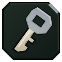

Hajin Art Center
Kur naudoti Hajin Art Center MW4 DMZ: The Grid, langelis G6. Retumas, kaip rasti duris, kas viduje ir kaip gauti raktą.
- Vietovė
- The Grid
- Langelis
- G6
- Durys
- The Grid
- Kaip gauti
- Dar nepatvirtinta.
Langelis žymi paieškos zoną, ne tikslias duris.
Ši vieta dar nepatvirtinta. Jei durų ten nėra, apžiūrėk aplinką.
Kaip rasti
The Grid rajone ieškok tamsių stiklinių dvivėrių durų šalia laiptinės. Sąveikos užraše turi būti Hajin Art Center.
Viduje
Turinys dar neaprašytas.
Daugiau raktų: The Grid
- Executive Arms AuctionEpic · DBN Headquarters, The GridG6
- Gas Station Electrical RoomRare · Construction Zone gas stationH7
- Hanex Guard StationEpic · Hanex Bank tower, The GridG6
- Hanwoori Art Records RoomRare · Hanwoori Design Complex, The GridG7
- Hotel Lucera LobbyHotel Lucera, next to the Hanex towerH7
- Lucera Suite 703 BedroomEpic · Hotel LuceraH7
- Netshin IT RoomEpic · Netshin Tech Complex, The GridG6
- Roze's Highrise ArmoryLegendary · Netshin Tech Complex, The GridG6